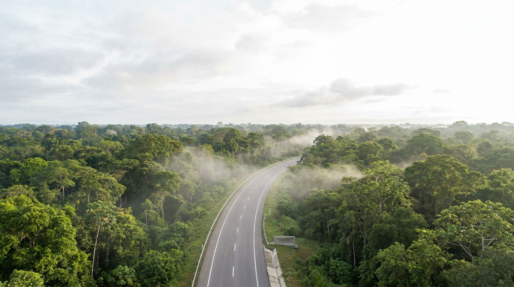
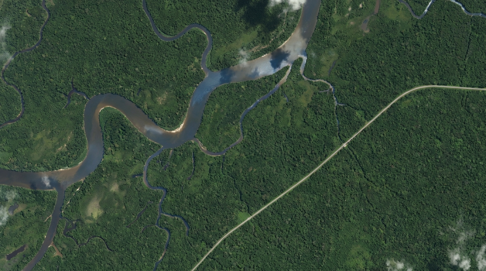

Consórcio Matupiri · DNIT · Amazonas
Monitoramento, inteligência ambiental e apoio à fiscalização aplicados à infraestrutura rodoviária federal na Amazônia.
Uma plataforma digital para integrar campo, documentos, indicadores, mapas e evidências ambientais em apoio à fiscalização do DNIT.
A supervisão ambiental do Consórcio Matupiri abrange uma malha rodoviária federal extensa, traduzida em números que expressam a escala da operação.
Supervisionar obras rodoviárias na Amazônia exige integrar informações de campo, licenças, condicionantes, comunidades, recursos hídricos, fauna, flora, resíduos, jazidas, canteiros e relatórios técnicos em um processo contínuo de acompanhamento e apoio à fiscalização.
Passe o mouse, toque ou navegue pelos temas: cada dimensão ambiental é acompanhada de forma contínua e converge para a supervisão.
Converge para a Supervisão AmbientalCada vistoria, registro fotográfico, condicionante e documento técnico alimenta um fluxo integrado de supervisão ambiental, fortalecendo a rastreabilidade e a tomada de decisão institucional.
Vistorias, coletas e registros georreferenciados em tempo real.
Centralização e qualificação dos dados em uma plataforma única.
Aplicação metodológica e padronização das ações ambientais.
Sínteses técnicas e evidências para a tomada de decisão.
Governança ambiental construída a partir de evidências, indicadores e inteligência técnica.

Capa institucional · substituívelO PROFAS organiza diretrizes e práticas ambientais aplicadas à supervisão rodoviária, estruturando ações de diagnóstico, planejamento, execução, monitoramento e melhoria contínua.
Reduzir passivos ambientais e elevar a conformidade ao longo de todo o ciclo da obra.
Conexão direta com o Painel Ambiental e os relatórios técnicos ao DNIT.
Inteligência ambiental aplicada à supervisão rodoviária.
A atuação ambiental se materializa no território. Cada vistoria, campanha, registro e orientação técnica fortalece a fiscalização e gera evidências para a gestão institucional.
⬡ Espaços reservados a fotos reais do Consórcio Matupiri — substituíveis sem alterar o layout.Contratos, trechos, jazidas, canteiros e áreas monitoradas integrados em uma visão territorial da supervisão ambiental.

LAT −3.10 LON −60.02 SIRGAS 2000 · UTM 20SAcervo técnico da supervisão ambiental, reunindo programas, boletins, relatórios, cartilhas, campanhas e registros institucionais.
Programa de Rodovias Ambientalmente Sustentáveis — metodologia, escopo e diretrizes técnicas.
Edições periódicas com o panorama das ações de campo e indicadores de conformidade.
Sínteses e evidências consolidadas para apoio à fiscalização e à decisão do DNIT.
Educação ambiental e boas práticas para equipes, comunidades e parceiros.
Materiais de mobilização e conscientização realizados ao longo dos trechos.
Acervo visual georreferenciado das frentes de trabalho e ações ambientais.
Consórcio Matupiri
Uma plataforma permanente para integrar evidências de campo, documentos técnicos, indicadores e ações ambientais em apoio à fiscalização do DNIT.
Plataforma para apresentações, visitas técnicas e divulgação das ações ambientais do consórcio.